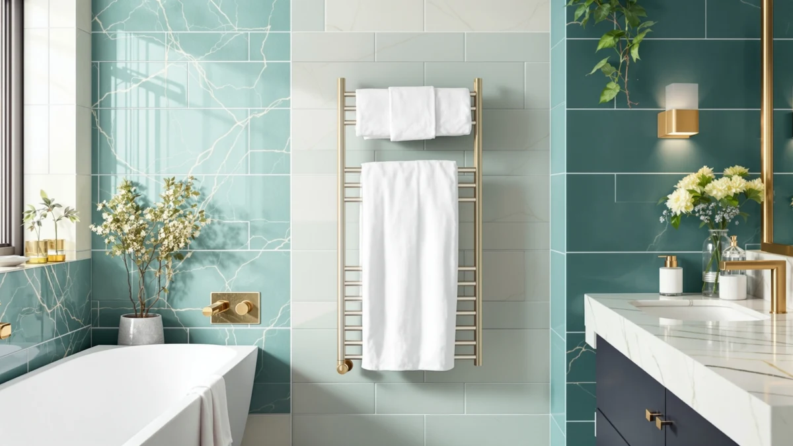

P&Dlusir Heated Towel Rack Review (2026): Worth It?
Prices and picks verified as of September 2026. Independent, reader-supported reviews.


Quick Answer
The P&Dlusir Heated Towel Rack Wall-Mounted is a 10-bar warmer built from polished stainless steel that runs on a plug-in cord or a hardwired connection and heats to a top setting of 150°F in about three minutes. Among the towel warmers in this comparison, it stands out for pairing the largest bar count with three selectable heat levels and four timer settings, rather than a single fixed temperature.
Our pick: P&Dlusir Heated Towel Rack Wall-Mounted, $169.99 Check Price on Amazon
Bottom line: our top pick is the P&Dlusir Heated Towel Rack at $169.99.
Things to Know Before You Buy
- The P&Dlusir towel rack heats through a polished stainless steel frame with 10 bars, more than the 8-bar Colliford and NORTTA racks compared in this P&Dlusir heated towel rack review, and reaches a top setting of 150°F.
- It runs on the included 1.2-meter cord from a standard outlet or wires directly into the wall, and reaches full heat in about 3 minutes on a 125W draw at 110V/60Hz.
- A timer lets you pick 4, 8, or 12 hours of continuous heat, or leave it always on, with three selectable heat levels between 113°F and 150°F.
- At $169.99, it costs $10 to $60 more than the three alternatives in this comparison, all of which top out at 8 bars or fewer.
- None of the four towel warmers compared here carry a published rating or review count on Amazon, so specs and pricing carry more weight than star ratings.
This P&Dlusir heated towel rack review looks at whether the extra two bars and higher price over rival wall-mounted warmers earn their keep in a bathroom that has the wall space for a 21.7-inch by 39.4-inch fixture. At $169.99, the P&Dlusir Heated Towel Rack Wall-Mounted sits above the NORTTA and Colliford racks and well above the Live Fine bucket warmer in this comparison, so the question is whether its 10-bar layout and dual installation options justify the gap.
The short version: if you want the largest bar count in this group along with a choice of plug-in or hardwired installation and three selectable heat levels, the P&Dlusir is the strongest pick. If eight bars is plenty and you would rather save $10 to $40, the NORTTA or Colliford racks below cover the same core features for less, and the Live Fine bucket warmer is worth a look if you would rather skip wall mounting altogether.
Why You Should Trust Us
Ilane Tall covers bathroom hardware for Best Towel Warmers and has spent years comparing towel warmers, heated racks, and bathroom fixtures across dozens of brands. We do not run a physical testing lab, and we do not put products through hands-on trials before publishing. Instead, we research each unit by comparing manufacturer specifications, current pricing, safety details, and the verified owner reviews available on Amazon and other retailers, then weigh those details against the closest competitors in its category. This P&Dlusir heated towel rack review reflects that research process, not a personal trial period with the product, and we say so plainly instead of implying a hands-on test that never happened.
Our Research Experience
We did not run this P&Dlusir heated towel rack review off a personal trial with the unit. What we did was pull P&Dlusir's stated specs, the 10-bar layout, polished stainless frame, and the 113°F to 150°F range across three heat levels, and set them against the three closest competitors in this comparison. We compared installation options, since the P&Dlusir supports both a plug-in cord and hardwired wiring while some rivals only offer one path, and we checked how each brand describes its heat-up time, bar count, and timer settings. Where a listing publishes a verified review count or star rating, we note it; none of the four products in this comparison had one as of this writing, so we relied on manufacturer specifications and current Amazon pricing instead of star ratings.
We also read through each brand's own feature claims, since that marketing copy is often the most detailed spec sheet available for towel warmers at this price tier. Where those claims could be checked against a competing brand's numbers, such as heat-up time, bar count, or waterproof rating, we made that comparison directly rather than repeating each company's language without context.
Overview & Specs

P&Dlusir Heated Towel Rack Wall-Mounted
What we like
- 10-bar polished stainless frame holds more towels and robes at once than the 8-bar racks compared here
- Three selectable heat levels between 113°F and 150°F instead of one fixed setting
- Runs on a plug-in cord or hardwired connection, so installation is not locked to one method
- Reaches its top temperature in about 3 minutes on a 125W draw
Flaws but not dealbreakers
- No published owner rating or review count on Amazon as of this review
- Costs $10 to $60 more than the three alternatives compared here
- At 21.7 inches wide and 39.4 inches tall, it needs more wall space than compact 6- or 8-bar racks
| Material | Stainless steel |
| Size | 10 Bar |
The P&Dlusir Heated Towel Rack Wall-Mounted is built around a 10-bar polished stainless steel frame designed to mount to a bathroom wall, measuring 21.7 inches wide by 39.4 inches tall. It runs on the included 1.2-meter cord plugged into a standard outlet, or it can be wired directly into the wall for a cordless look. P&Dlusir states the square-tube bars reach a top setting of 150°F in about three minutes and hold that temperature, warming towels and robes all the way through instead of only on the surface.
A control panel lets you choose a 4-hour, 8-hour, or 12-hour timer, or leave the rack always on, and pick one of three heat levels between 113°F and 150°F. At 125W on 110V/60Hz power, it draws roughly the same electricity as a couple of light bulbs running for the same stretch, which keeps the cost of leaving it on for a full day modest compared with running a space heater.
What We Liked
The strongest case in this P&Dlusir heated towel rack review comes down to bar count and heat control together. Where the NORTTA and Colliford racks top out at 8 bars, P&Dlusir's frame gives you 10, enough to hang a full-size towel, a robe, and a couple of washcloths without doubling up on a single bar. Pair that with three selectable heat levels between 113°F and 150°F, and you get more room and more control than either 8-bar rival offers at a lower price.
Installation flexibility matters as much as capacity here. Because the P&Dlusir runs on a standard plug-in cord or wires directly into the wall, it fits a first-time bathroom build as easily as a swap-in replacement for an older plug-in unit. Not every wall-mounted warmer in this price range offers both paths, and the choice avoids locking you into hiring an electrician if you would rather plug it in and go.
The three-minute heat-up time is fast enough that you can turn it on right before a shower rather than planning an hour ahead, and the timer options, 4, 8, 12 hours, or always-on, cover both a quick reheat before a shower and a full day of standby heat.
What Could Be Better
The biggest gap in this P&Dlusir heated towel rack review is price. At $169.99, the P&Dlusir costs $10 more than the NORTTA, $40 more than the Colliford, and $60 more than the Live Fine bucket warmer, and the extra two bars over the 8-bar rivals may not be worth that gap if your bathroom has less wall space to work with.
As with the other three products compared here, there is no published rating or review count on Amazon for the P&Dlusir as of this writing. A 10-bar frame and a stated 150°F top setting are worth knowing, but without a base of verified owner reviews, you are relying more on the manufacturer's own claims than on real-world reports of how the finish or the heating element holds up after months of daily use in a humid bathroom.
Size is the last tradeoff. At 21.7 inches wide and 39.4 inches tall, the P&Dlusir needs more wall space than the 8-bar racks below, so measure your wall before ordering if your bathroom layout is tight.
Who Is It For?
The P&Dlusir Heated Towel Rack Wall-Mounted fits a household that wants the largest bar count in this comparison and real control over heat level, and that has the wall space and budget to support it. If you are outfitting a primary bathroom where more than one towel or robe needs to hang at once, the 10-bar frame and three heat settings make it the strongest fit among the four warmers compared here.
It is a weaker match if your bathroom has limited wall space, if you want to keep costs closer to $110 to $130, or if you would rather skip wall mounting altogether. In those cases, the NORTTA or Colliford racks below cover the same plug-in-or-hardwired flexibility in a smaller frame for less, and the Live Fine bucket warmer is worth a look if a countertop setup suits your bathroom better.
Alternatives to Consider
If the price or the 10-bar size of the P&Dlusir is not the right fit, these three alternatives cover two smaller wall-mounted racks and a bucket-style warmer, each priced lower than the P&Dlusir Heated Towel Rack Wall-Mounted.

Editor’s Pick
NORTTA 8-Bar Wall-Mounted Towel Warmer
This 8-bar wall-mounted rack installs on either side of a wall opening and offers three timer modes, continuous, 2-hour, or 4-hour shutoff, at $159.99, ten dollars less than the P&Dlusir for two fewer bars.
$159.99
Check Price on Amazon
Best Value
Colliford Towel Warmer Towel Heater
This 8-bar, 304 stainless steel rack carries an IPX5 waterproof rating and heats to 122°F to 131°F within 20 minutes, with a 1-to-9-hour timer or always-on setting, at $129.99, forty dollars less than the P&Dlusir.
$129.99
Check Price on Amazon
Premium Choice
Live Fine Towel Warmer |
A bucket-style warmer rather than a wall rack, this Live Fine unit uses an LED display and a 15, 30, 45, or 60-minute adjustable timer, and fits an oversized 40-inch by 70-inch towel, making it a better fit for a countertop setup than a wall-mounted fixture.
$109.98
Check Price on AmazonIs the P&Dlusir Heated Towel Rack Wall-Mounted worth the extra cost over an 8-bar warmer?
Only if the extra two bars and the wider 113°F to 150°F heat range across three levels matter for your household.
How long does the P&Dlusir towel rack take to heat up?
P&Dlusir states the rack reaches its top setting of 150°F in about three minutes, faster than the 20-minute heat-up window Colliford publishes for its rack.
Frequently Asked Questions
Is the P&Dlusir Heated Towel Rack Wall-Mounted worth the extra cost over an 8-bar warmer?
Only if the extra two bars and the wider 113°F to 150°F heat range across three levels matter for your household. Based on the specs compared in this P&Dlusir heated towel rack review, the NORTTA and Colliford racks cover the same plug-in-or-hardwired flexibility in an 8-bar frame for $10 to $40 less, so the P&Dlusir mainly earns its price if you need the largest capacity in this group.
How long does the P&Dlusir towel rack take to heat up?
P&Dlusir states the rack reaches its top setting of 150°F in about three minutes, faster than the 20-minute heat-up window Colliford publishes for its rack. Actual warm-up time depends on the heat level you choose, since the P&Dlusir offers three settings between 113°F and 150°F rather than one fixed temperature.
Can the P&Dlusir towel rack be installed without an electrician?
Yes. It runs on the included 1.2-meter cord from a standard outlet as well as a hardwired connection, so you can plug it in without hiring an electrician and switch to a hardwired setup later if you want a more permanent, cordless installation.
Final Verdict
This P&Dlusir heated towel rack review comes down to a straightforward tradeoff: at $169.99, the P&Dlusir Heated Towel Rack Wall-Mounted buys you the largest bar count in this comparison, three selectable heat levels, and the choice of plug-in or hardwired installation. If that capacity and control matter more to you than saving $10 to $60, P&Dlusir is the strongest pick among the four towel warmers compared here. If eight bars is enough or you would rather keep costs down, the NORTTA, Colliford, or Live Fine warmers below cover the core features for less.